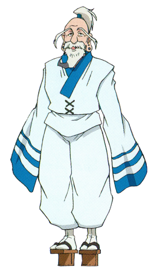

I S A A C N E T E R O
Isaac Netero (アイザック＝ネテロ, Aizakku Netero?) fue el décimo segundo presidente de la Asociación de Cazadores y el presidente en el Comité de Selección del examen de Cazador. Es uno de los personajes de edad más avanzada y de los más poderosos en el mundo de Hunter × Hunter.Isaac Netero (アイザック＝ネテロ, Aizakku Netero?) fue el décimo segundo presidente de la Asociación de Cazadores y el presidente en el Comité de Selección del examen de Cazador. Es uno de los personajes de edad más avanzada y de los más poderosos en el mundo de Hunter × Hunter.
| D E B U T |
|---|
| MANGA - Capitulo 012 |
| ANIME - Episodio 06 |
| V O Z |
| JAPONES - Ichirō Nagai |
| Banjō Ginga |
| P E R F I L |
| SEXO - Masculino |
| EDAD - +110 años |
| Color de Cabello - Blanco |
| Color de ojos - Café |
| Ocupación - Presidente de la Asociación de Cazadores |